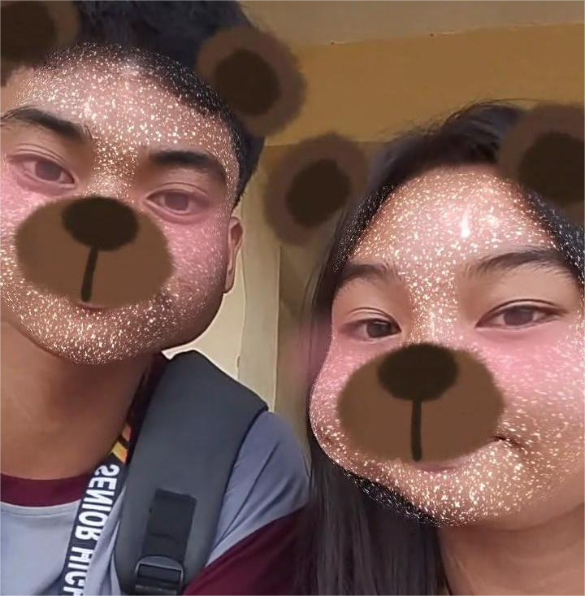
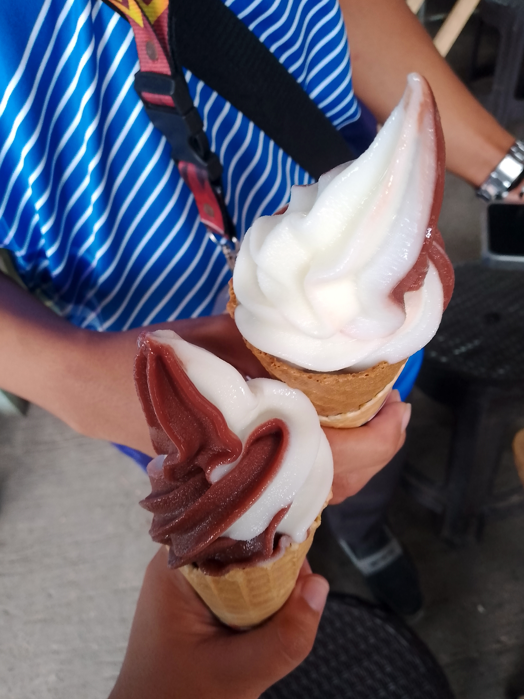
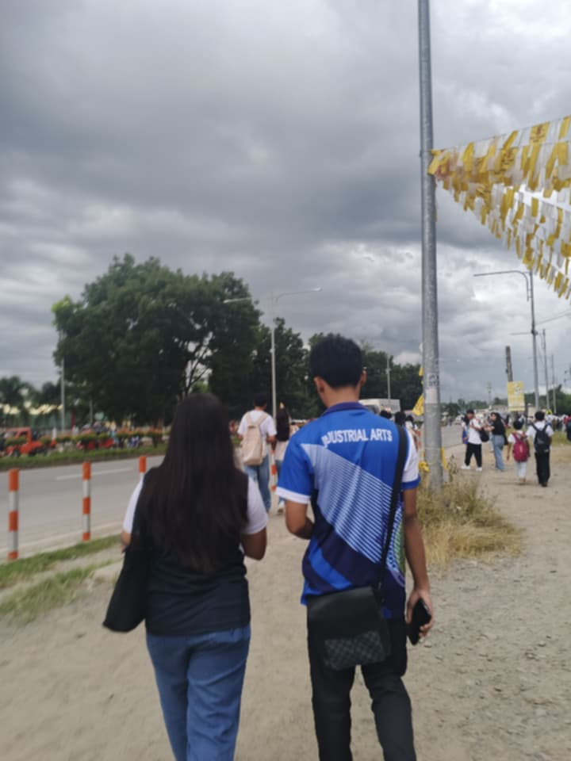

Trying to play your song automatically…
Turn up your volume for the full experience ♡
Scroll down for your special surprises
Close your eyes, make a wish, and tap the cake!
🕯️ Tap the cake to blow out the candles!



You make ordinary days feel special. Today, I hope you feel just how appreciated, treasured, and loved you are.
More memories, more laughter, more love. ♡